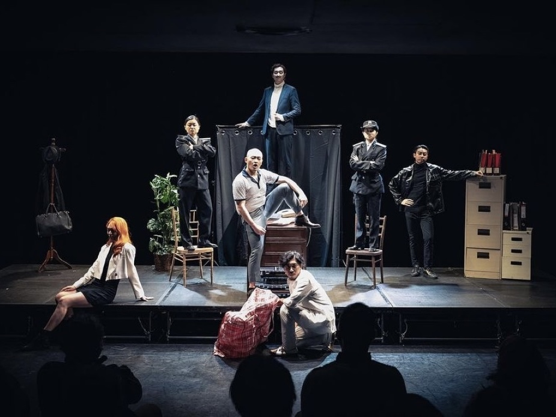

The Arts Development Council's cuts in funding for the Hong Kong Federation of Drama Societies (HKFDS) have sent shockwaves through the industry, with shows being cancelled and artists expressing concerns about creative freedom and the limits imposed by the national security law. Wu Chun Him, a former committee member of the Arts Development Council, said, "The artistic ecosystem in Hong Kong appears to be aligning increasingly with that of mainland China, where artists operate within boundaries set by the government."
In January, the HKFDS announced the cutting of its subsidy from the Arts Development Council and venue sponsorship from the Leisure and Cultural Services Department for the annual Hong Kong's largest theatre awards ceremony, the "Hong Kong Drama Awards." The council cited "inappropriate" arrangements during last year's event and warned the organizers against potential violations of the law. One of the presenters at last year's awards ceremony was Wong Kei-kwan, a political cartoonist known as "Zunzi." Another presenter was journalist Bao Choy, who was previously arrested in 2020 for making false statements while investigating the Yuen Long attacks during the 2019 protests. However, she was later cleared of any wrongdoing by the city's top court. This situation is indicative of a larger trend of political influence in Hong Kong's artistic landscape.
The HKFDS had to self-fund this year's awards ceremony. The event took place on April 29th at a restaurant in Wan Chai, with the venue reduced by about 80%. Luther Fung, the Chairperson of the HKFDS, stated at the ceremony that the content of the awards ceremony, including the opening speech, would not be affected. He said, "Nothing has happened. We have prepared in a legal, reasonable, and just manner. We won't do anything improper." He also mentioned that they will continue to apply for funding from the Arts Development Council next year.
The previous awards ceremony was held at the Kwai Tsing Theatre, which had a total of 899 seats. Due to the lack of official funding and venue support, this year's ceremony was moved to a restaurant with only about 160 seats.
Kenneth Fok, the Chairperson of the Arts Development Council, speaking to the media, said that as a government-funded body, the council must exercise caution in its use of public funds. He stated that the council constantly reviews its mechanisms with the government to ensure compliance with the law, including the national security law.
Wu emphasized the close connection between securing funding, subsidies, and venue bookings in Hong Kong and the government's viewpoint on political correctness. This sends a significant message to the artistic community, creating a climate of self-censorship and uncertainty about the boundaries of artistic expression.
Wu Chun Him, a former committee member of the Arts Development Council, has relocated to the United Kingdom and is currently pursuing his artistic endeavors there.
In another blow to artistic freedom, the Hong Kong Academy for Performing Arts (HKAPA) unexpectedly canceled the performance of the renowned Italian play "Accidental Death of an Anarchist" in February, just two weeks prior to the scheduled performance. This play, created by Dario Fo, the recipient of the 1997 Nobel Prize in Literature, was set to be staged in Hong Kong in 2020 and Beijing in 2024.
The Hong Kong Academy for Performing Arts unexpectedly canceled the performance of the renowned Italian play "Accidental Death of an Anarchist" (Photo Source: Performer’s social media)
The reasons behind the cancellation were not publicly announced, but the school stated that it had sought legal advice and identified potential legal risks that warranted the need to protect the students. A student performer of the play expressed his shock on social media, stating, "The efforts and hard work of the past five months have been wasted due to a single decision." He believed that the answer to the cancellation of the performance was "very obvious." This event further underscores the challenges faced by artists in Hong Kong.
The concerns among artists are not unfounded. Hong Kong artists now find themselves walking a fine line, unsure of where the limits are drawn, leading to self-censorship as a means of self-preservation. Wu commented, "There is a fear that those who seek to appease the government may inadvertently push the boundaries further, resulting in even greater limitations on artistic expression."
"Hong Kong artists may need to familiarize themselves with the concept of 'playing the edge ball.' It appears that the boundaries in Hong Kong may be even more restrictive compared to those in mainland China, where artists have been practicing this approach for a long time. Mainland Chinese artists have acquired skills to navigatewithin the rules, whereas Hong Kong artists may not have had as much exposure to this practice." Hong Kong artists need to find the delicate balance between expressing their views and engaging in thoughtful discourse through their work, all while navigating political sensitivities. "Hong Kong artists need to find ways to create within a safe zone, even though there is no guarantee that their work will remain within the acceptable boundaries," Wu said.
| Date | Event |
|---|---|
| 14th June 2023 | The "31st Hong Kong Drama Awards Ceremony" was held by the Hong Kong Federation of Drama Societies (HKFDS). |
| 14th July 2023 | HKFDS had a meeting with a member from the Arts Development Council in an unofficial capacity, during which the council member expressed concerns. |
| 8th December 2023 | HKFDS received two letters from the Arts Development Council. One letter informed them of a funding deduction, while the other stated that funding for the upcoming awards ceremony would be discontinued. |
| 31st December 2023 | HKFDS sent an email to the Arts Development Council requesting an explanation and requested a response by 12th January. |
| 12th January 2024 | The Arts Development Council claimed to have sent a reply, but HKFDS did not receive it until 17th January. |
| 17th January 2024 | HKFDS announced on social platforms that the next year's awards ceremony would not be funded and requested a reply from the Arts Development Council. |
| 18th January 2024 | HKFDS received a reply, and the Arts Development Council expressed disagreement with the hosting speech at the awards ceremony. |
| 19th January 2024 | HKFDS held a press conference to respond to the accusations and requested the Arts Development Council to withdraw them. |
| 9th February 2024 | The Hong Kong Academy for Performing Arts canceled the play "Accidental Death of an Anarchist" due to potential legal risks. |
| 29th April 2024 | HKFDS self-funded the "32nd Hong Kong Drama Awards Ceremony," which took place at a restaurant with the venue reduced by about 80%. |